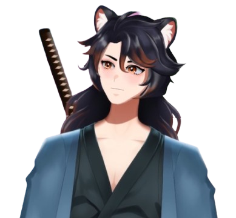

Kensei Tokonami é um VTuber Kitsune protetor dos espiritos.
Sobre Kensei Tokonami

O que você encontra nas lives do Kensei?
- ⚔️ gameplay
Quando assistir?
Kensei faz lives regularmente nos seguintes dias:
- üìÖ Segunda e Quarta - √†s 18:30
- üìÖ Sexta - √†s 18h
Redes Sociais
Momento incrível de Kensei Tokonami!
Amanhã as 18:00 teremos meu debut lá no Youtube e na Twitch com participações da @Ani_Lord_ e @maybeystyle#Vtuber #debut #vtuberbr #vtuberbrasileiro #KenseiTokonami pic.twitter.com/8N09JTbj3o
— Kensei Tokonami (@KenseiTokonami) February 27, 2025